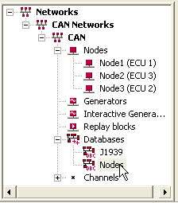
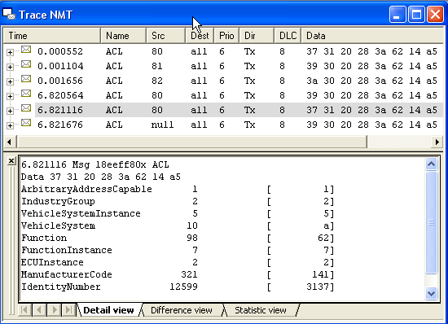
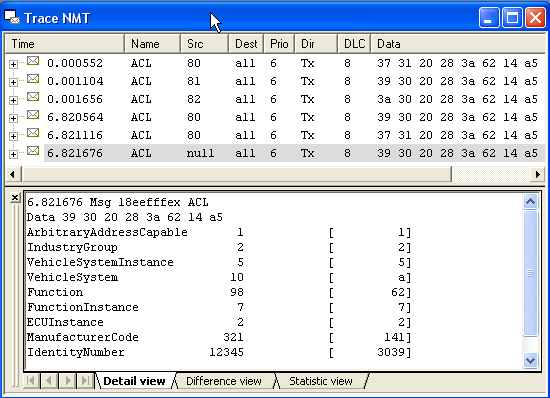

Chapter 8
J1939.c CAN Bus plus RS232 (continued)
Vector's CANoe AddressClaiming_CN.cfg sample bug
<< back to main page
<< previous chapter ( The "J1939 Address Claiming" Microchip sample bug)
| Abstract
of
the 1rst
Chapter: Microchip provided source code  for J1939.c
CAN library for J1939.c
CAN library  (Kim
Otten et al.), plus Application Maestro generated
code UARTIntC.c, were used to implement a bare-bones system
with a 2-node CAN bus, where node #129 upon receiving commands from
#128
to toggle a LED also output strings "ON" and "OFF" thru the RSR23. (Kim
Otten et al.), plus Application Maestro generated
code UARTIntC.c, were used to implement a bare-bones system
with a 2-node CAN bus, where node #129 upon receiving commands from
#128
to toggle a LED also output strings "ON" and "OFF" thru the RSR23.Abstract of the 2nd Chapter: We kept the 2 nodes #128 and #129 exchanging messages, and added a 3rd node, #130, listening to them, and reporting to the PC. Everything addressed to our smart node #130 was send to our PC's Terminal program, dumping the affected RxBuffers to the UART. Abstract of the 3rd Chapter: Our smart node #130 was put in ListenOnly mode, all masks to zeros - a true "spy", now. But because the firmware J1939.c generates so few messages, the overall result is not much exciting. Abstract of the 4th Chapter: So we want to improve our basic firmware, but that means going deeper into understanding the SAE J1939 protocol (automotive, commercial vehicles, etc.). We could use some help in that, and luckily there are at least 2 free "demos" available which we can use to simulate the bus. Abstract of the 5th Chapter: While learning CAN/J1939 a CAN/J1939 simulator is a nice tool, among others, to test if the NMT behaviour (network management) you have coded and believe is OK, is indeed conforming to the SAE standard. CANoe simulator is a wonderful tool for that, and on top of its price can't be beaten (yes, the limited but functional demo is free). We had a look at just a small parcel of it. Abstract of the 6th Chapter: This time we played with Michael Eisele's Xtm, using it as a CAN/J1939 simulator. Michael kindly prepared a sample implementing about the same functionality as the CANoe's example of the previous chapter - the Address Claimed message of the J1939 Address Claiming NMT procedure. Abstract of the 7th Chapter: Microchip's J1939.c CAN library has an error: during Address Claim NMT procedures the AC's NAMEs are compared in the wrong order - not from the most significant NAME's byte to the least significant., violating SAE J1939-81\4.4.3.3. |
| Don't
want to miss the next chapter? just drop me
an email to recursos.pt@gmail.com
subject: J1939 CAN, and I will notify you. No other use will be made of your e-mail address. |
Vector's CANoe CAPL code for their AddressClaiming_CN.cfg sample, much touted by myself in Chapter 5 suffers exactly the same bug as in Microchip's J1939.c CAN library (app. note 930) analized in our previous chapter:
- Vector's CANoe "J1939 AddressClaiming_CN.cfg" example bug
- CANoe configuration to test the bug
- The bug in the Function utilCompareDeviceName ()
- What's next?
| Note: most of the text refering to SAE J1939-81 is repeated from the previous chapter, in order to keep each chapter as autonomous as possible. |
1 - The "J1939 AddressClaiming_CN.cfg" Vector's CANor example bug
Saddly to say, our most beloved Vector's CANoe CAPL code for their AddressClaiming_CN.cfg sample has a serious bug.
I wonder why nobody has already pointed that (as far as I know), since this example source code has been around for some time. Either nobody is using it, or nobody payed much attention.
So, what is wrong with the CANoe\J1939_CN\MoreExamples\AddressClaiming\Node1.can etc.?
The most basic feature of J1939 is the Address Claiming negotiation:
No two nodes can
have the same Source
Address, therefore according to SAE J1939-81, a node
must successfully claim an address according to the procedures
explained in section 4.2
“Network Management Procedure” prior
to sending any other messages on the network.
In SAE J1939-81, the key to resolve any contention between 2 nodes claiming the same address is to use the node's NAMEs which must always be unique:
| 3.1.3
Addresses and NAME (J1939/81 and Appendix B) Each ECU on the network will have at least one name and one address associated with it. (...) The address of an ECU defines a specific communications source or destination for messages, the name includes identification of the primary function performed at that address and adds an indication of the instance of that functionality in the event that multiple ECUs with the same primary function coexist on the same network. As many as 254 different ECUs of the same function can coexist on the network, each identified by their own address and name. To uniquely name each ECU, J1939 defines a 64 bit NAME consisting of the fields shown in Table 1.(...) In general, most ECUs will use their Preferred Addresses immediately upon power up. A specific procedure (defined in J1939/81 and elaborated on in J1939/01) for assigning addresses after powerup is used to resolve any conflicts that may occur. Each ECU must be capable of announcing which address(es) it intends to use. |
| Arbitrary Address Capable | Industry Group | Vehicle System Instance | Vehicle System | Reserved | Function | Function Instance | ECU Instance | Manufacturer Code | Identity Number |
| 1 bit | 3 bit | 4 bit | 7 bit | 1 bit | 8 bit | 5 bit | 3 bit | 11 bit | 21 bit |
| Byte
8 |
Byte 7 | Byte 6 | Byte 5 | Byte 4 to Byte 1 | |||||
| The byte ordering of the NAME fields in a CAN
message is shown in table
2, and is arranged to allow the NAME
to be treated as a number in a
manner consistent with SAE J1939-71. The entire 8 byte NAME is used as
a single numeric value in arbitration processes when multiple CAs
attempt to claim the same address (see 4.4.3.3). |
Table 2: Field positions within NAME:
| Byte | Bits | Position of Most Significant bit | Description | Note: |
| 1 | 8-1 | 8 | Least significant byte of Identity Number | Bit 8 is the bit sent closest to the DLC bits of the message. |
| 2 | 8-1 | 8 | Second byte of Identity Number | |
| 3 | 8-6 | 8 | Least significant 3 bits of Manufacturer Code | |
| 5-1 | 5 | Most significant 5 bits of Identity Number | ||
| 4 | 8-1 | 8 | Most significant 8 bits of Manufacturer Code | |
| 5 | 8-4 | 8 | Function Instance | |
| 3-1 | 3 | ECU Instance | ||
| 6 | 8-1 | 8 | Function | |
| 7 | 8-2 | 8 | Vehicle System | |
| 1 | - | Reserved | ||
| 8 | 8 | - | Arbitrary Address Capable | |
| 7-5 | 7 | Industry Group | ||
| 4-1 | 4 | Vehicle System Instance | Bit 1 is the last of the data bits sent and is closest to the CRC in the message. |
Notice
that "Byte1, Bit
8 is the
bit sent closest to the DLC bits of
the message",
and that "Byte8, Bit
1 is the last of the data bits sent and is closest to the CRC in the
message" (SAE uses bits 8..1 where we use bits 7...0).
This really means that the bytes are output to the CAN bus in the
reverse order of their priority.
That the Arbitrary Address Capable
bit is the most significant makes all sense, as a node (in J1939
parlance, a Controller Application (CA))
with such capability can afford to loose arbitration for a less endowed
node (!):
Open CANoe\J1939_CN\MoreExamples\AddressClaiming\AddressClaiming_CN.cfg, then select the "Setup" tab (bottom left) and double click Databases - Nodes to open Nodes.dbc database.
Click ECUs Node1 and Node2, and edit the respective Addresse and NAMEs fields as below:
The two NmJ1939IdentityNumbers have been choosed cirurgicaly: 12599 = 0x3137 and 12344=0x3039 - although the first IdentityNumber is larger, its low byte is the lowest: 0x37 < 0x39.
This will trip the bugged code.
Save the edited Nodes.dbc, compile and run the simulation.
Use the Panel2 to set a new address to Node2, making it 128, to cause a conflict with Node1.
Stop the simulation and inspect the Trace NMT window.
The top 3 lines are the healthy AddressClaimed messages at startup.
The 4th line is AddressClaimed message issued by Node2 after its new Address = 128 is set by means of Panel2.
The 5th line (highlighted) shows that Node1 won the contention and claimed address 128.
The bottom line shows that Node2 loose the contention and send CannotClaimAddress message.
Inspecting the CAPL code in Node1.can etc., we find the same error as in the Microchip App. Note discussed in the previous chapter.
(The highlighted code was added just for debug)
The error in the code is that instead of comparing from Name[0] up to Name[7] it should be done in reverse, from Name[7] down to Name[0] - because the NAME's bytes are output to the CAN bus in the reverse order of their priority.
With the code "as is", the contention is wrongly decided by first looking at the 64th bit, in the low byte of Identity Number, then the second byte of Identity Number etc. etc., but SAE J1939-81 says it should start by the 1rst bit, our old Arbitrary Address Capable.
The two NmJ1939IdentityNumbers are 12599 = 0x3137 and 12344=0x3039 - although the first IdentityNumber is larger, its low byte is the lowest: 0x37 < 0x39, and this fools the code.
This was posted to [CANLIST] forum (see 5481 [CANLIST] J1939 NAME and arbitration), and resulted in the folowing answer from Vector:
So there is nothing wrong except in the CAPL demo source code.
Stay with us, may be we will get somewhere!
And that's all, folks.
Please let me know of any broken links, missing parts etc. you may find here.
Next issues will become more sophisticated - I hope!.
<< back to main page
<< previous chapter ( The "J1939 Address Claiming" Microchip sample bug)
©Rec (recursos.pt@gmail.com)
06-05-05
| 3.3.2 Arbitrary
Address Capable CA An Arbitrary Address Capable CA is one that can select its source address from any appropriate SA (including those in the range 128 to 247 inclusive) based on internal algorithms, and then claim that address. This CA, in cases of address conflict, is also able to re-calculate its address and re-claim (unless all 120 of the addresses between 128 and 247 are used). The value in the Arbitrary Address Capable field in the NAME (See Section 4.1.1.2) indicates whether or not a CA has this capability. This capability is needed particularly for CAs that are expected to have multiple instances of the same device on a single vehicle. In these cases, the Arbitrary Address Capable CA will be the one to lose arbitration for a Preferred Address since the setting of the Arbitrary Address Capable bit in its NAME lowers its priority for address claim. This is correct behavior since its ability to operate correctly on the network will not be affected by the loss of arbitration. Note that if its function is one that would normally use a Preferred Address in the lower 128, it will claim that address first. Only upon losing arbitration during Address Claim will it claim an unused address from the range above 128. (...) 4.1.1.2 Arbitrary Address Capable Field This 1-bit field indicates whether a CA can use an arbitrary source address to resolve an address claim conflict. If this bit is set to “1”, the CA will resolve an address conflict with a CA whose NAME has a higher priority (lower numeric value) by selecting an arbitrary source address from the range 128 to 247 inclusive and claiming that source address. A self-configurable CA that computes its address but can claim only from a more restricted set of addresses is not considered arbitrary address capable (e.g. On-Highway Trailers.) See section 4.2 of this document for details of the address claim process. |
2 - CANoe configuration to test the bug
Open CANoe\J1939_CN\MoreExamples\AddressClaiming\AddressClaiming_CN.cfg, then select the "Setup" tab (bottom left) and double click Databases - Nodes to open Nodes.dbc database.
Click ECUs Node1 and Node2, and edit the respective Addresse and NAMEs fields as below:
|  |
NmStationAddress NmJ1939AAC NmJ1939IndustryGroup NmJ1939VehicleInstance NmJ1939VehicleSystem NmJ1939Function NmJ1939FunctionInstance NmJ1939ECUInstance NmJ1939ManufacturerCode NmJ1939IdentityNumber |
128 1 2 10 5 98 7 2 321 12599 |
129 1 2 10 5 98 7 2 321 12344 |
| CANoe configuration to test the bug: the nodes' NAMEs differ only by the NmJ1939IdentityNumber (12599 for node A, 12344 for node B) | |||
a5 14 62
3a 28 20 31 37 (#128)
a5 14 62 3a 28 20 30 39 (#129)
a5 14 62 3a 28 20 30 39 (#129)
The two NmJ1939IdentityNumbers have been choosed cirurgicaly: 12599 = 0x3137 and 12344=0x3039 - although the first IdentityNumber is larger, its low byte is the lowest: 0x37 < 0x39.
This will trip the bugged code.
Save the edited Nodes.dbc, compile and run the simulation.
Use the Panel2 to set a new address to Node2, making it 128, to cause a conflict with Node1.
Stop the simulation and inspect the Trace NMT window.
The top 3 lines are the healthy AddressClaimed messages at startup.
The 4th line is AddressClaimed message issued by Node2 after its new Address = 128 is set by means of Panel2.
The 5th line (highlighted) shows that Node1 won the contention and claimed address 128.
The bottom line shows that Node2 loose the contention and send CannotClaimAddress message.
|  |
Node1 wins arbitration (highlighted) although its NAME > Node2's NAME: a5 14 62
3a 28 20 31 37 > a5 14 62 3a 28 20 30 39
because the first bytes compared are 37 and 39 (wrong order) |
|  |
Node2 wrongly looses arbitration and sends CannotClaimAddress message, although it is the node with the higher priority (lower NAME) |
3 - The bug in the Function utilCompareDeviceName ()
Inspecting the CAPL code in Node1.can etc., we find the same error as in the Microchip App. Note discussed in the previous chapter.
for( i = 0; i < 8; i++ ) // wrong, the comparision should be from high to low.
/*
* Compare device names
*
* if pg1 has lower priority than pg2, return -1
* if pg1 has higher priority than pg2, return 1
* if both names are equal, return 0
*/
int utilCompareDeviceName( pg ACL pg1, pg ACL pg2 )
{
int i = 0;
for( i = 0; i < 8; i++ ) {
writeDbgLevel( kDbgInfo,"pg1[%d]=%x, pg2[%d]=%x\n",i,pg1.byte(i),i,pg2.byte(i)); if (pg1.byte(i) > pg2.byte(i)) { return -1;
} else if (pg1.byte(i) < pg2.byte(i)) { return 1;
} } return 0;
} |
The error in the code is that instead of comparing from Name[0] up to Name[7] it should be done in reverse, from Name[7] down to Name[0] - because the NAME's bytes are output to the CAN bus in the reverse order of their priority.
With the code "as is", the contention is wrongly decided by first looking at the 64th bit, in the low byte of Identity Number, then the second byte of Identity Number etc. etc., but SAE J1939-81 says it should start by the 1rst bit, our old Arbitrary Address Capable.
The two NmJ1939IdentityNumbers are 12599 = 0x3137 and 12344=0x3039 - although the first IdentityNumber is larger, its low byte is the lowest: 0x37 < 0x39, and this fools the code.
This was posted to [CANLIST] forum (see 5481 [CANLIST] J1939 NAME and arbitration), and resulted in the folowing answer from Vector:
| (...) we agree to your interpretation of NAME. In fact we implemented the comparison starting at byte7 down to byte0 in our embedded code and in the tool internal code. Just the CAPL demo program does it the wrong way. |
5498 Re: [CANLIST] J1939 NAME and arbitration |
So there is nothing wrong except in the CAPL demo source code.
4 - What is next?
Now that we have discursed a lot about J1939 Address Claiming Processes, let us try to move deeper and deeper into the NMT, with real PIC code.Stay with us, may be we will get somewhere!
| Don't
forget: if you don't
want to miss the next chapter, just drop me
an email to recursos.pt@gmail.com
subject: J1939 CAN, and I will notify you. No other use will be made of your e-mail address. |
And that's all, folks.
Please let me know of any broken links, missing parts etc. you may find here.
Next issues will become more sophisticated - I hope!.
<< back to main page
<< previous chapter ( The "J1939 Address Claiming" Microchip sample bug)
©Rec (recursos.pt@gmail.com)
06-05-05